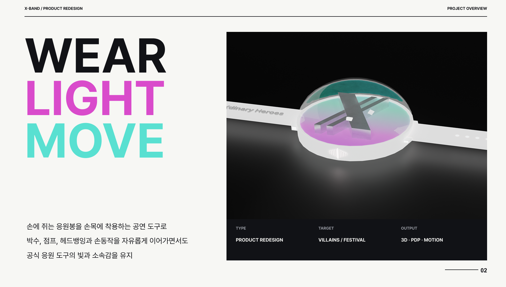
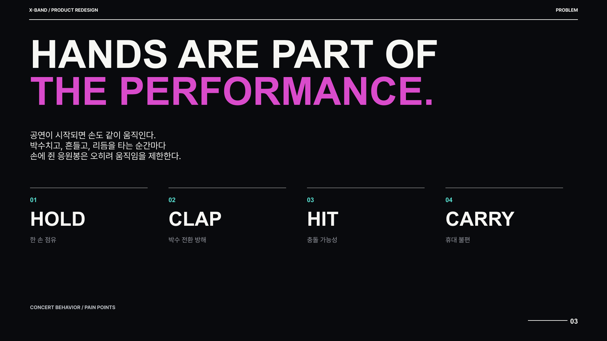
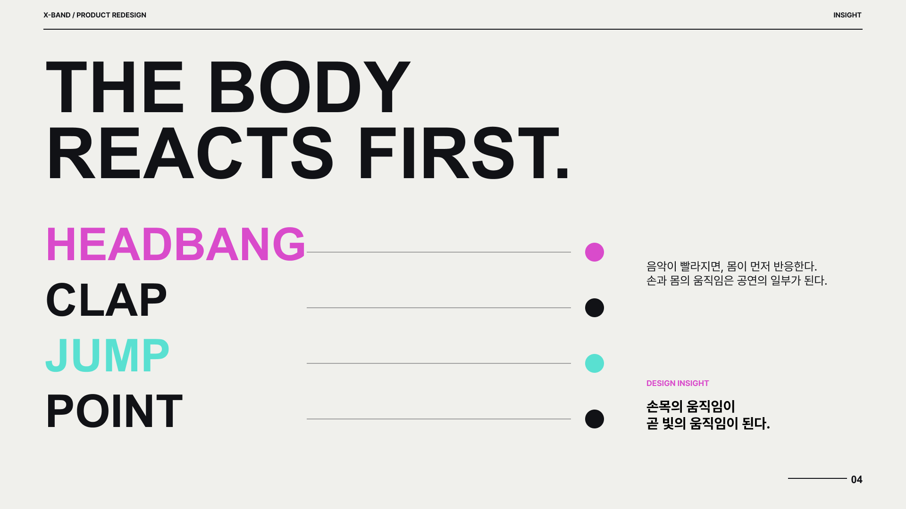
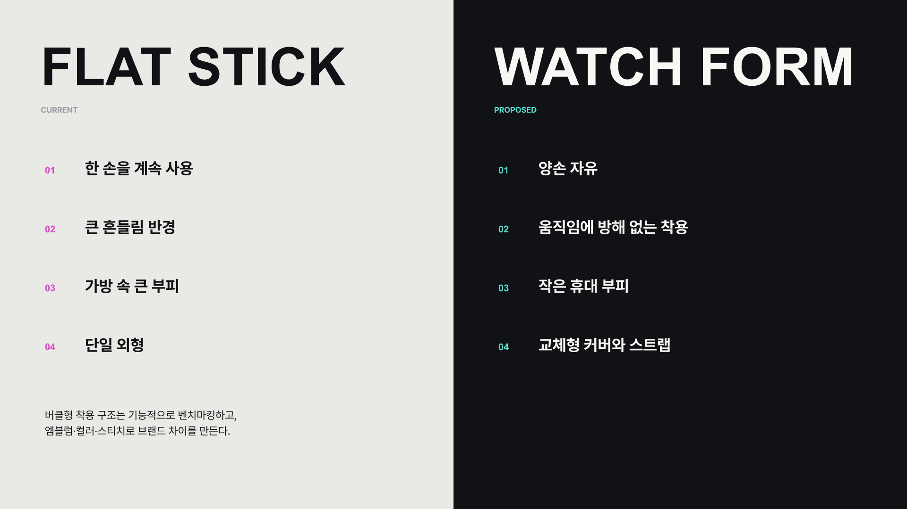
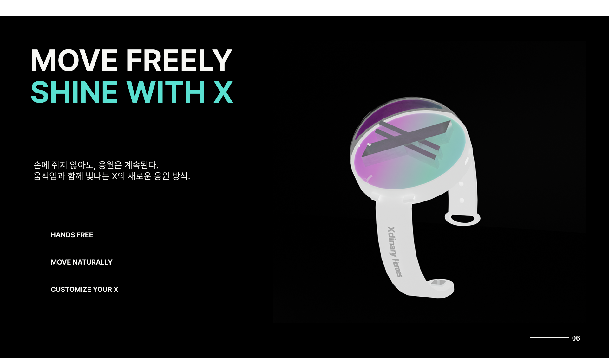
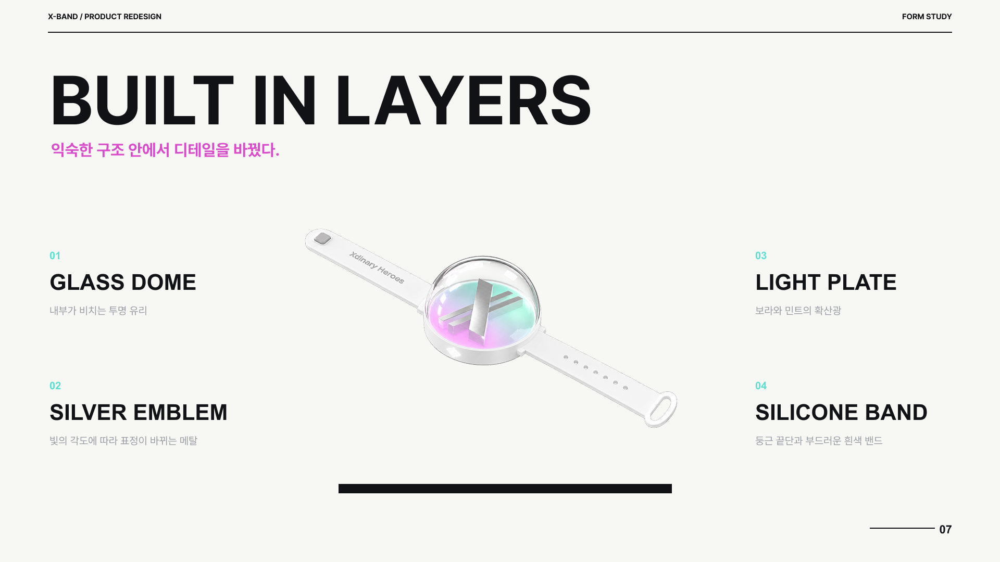
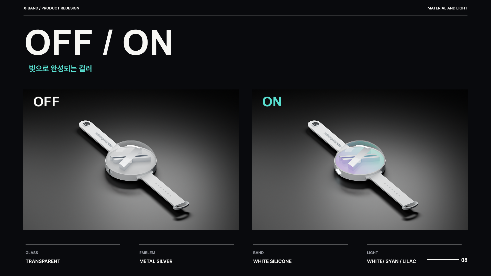
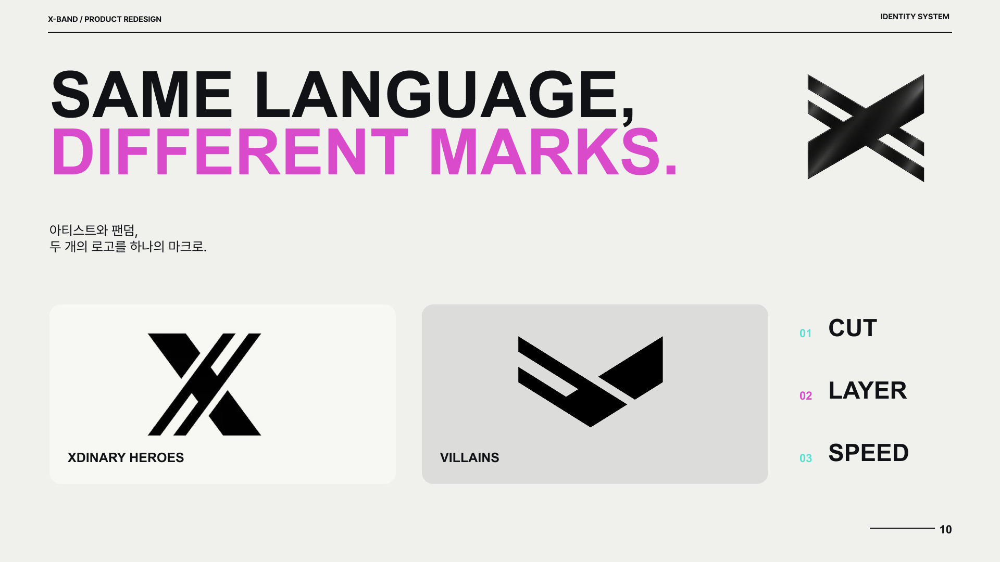
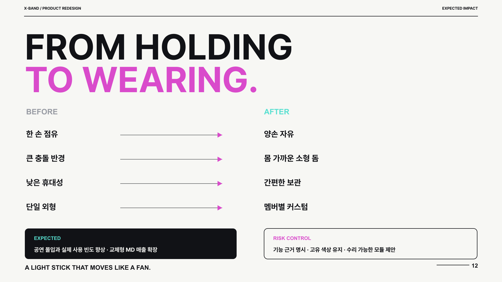

PRODUCT REDESIGN / XDINARY HEROES
X-BAND
Light on Your Wrist
박수치고, 점프하고, 리듬을 타는 순간에도 자유롭게.
팬의 움직임에서 출발한 손목형 응원봉 리디자인 프로젝트입니다.

THE IDEA
손목의 움직임이
빛의 움직임이 된다.
기존 응원봉이 한 손을 점유하고 움직임과 휴대에 제약을 준다는 문제에서 시작했습니다. 손목에 착용하는 작은 돔 형태로 바꾸고, 교체형 커버와 스트랩으로 팬의 개성을 담는 방향을 제안했습니다.
- 대상
- Xdinary Heroes 팬덤 · 공연 관객
- 작업 구성
- 제품 리디자인 · 상세페이지 · 광고 티저
- 프로젝트 성격
- 콘셉트 리디자인 제안
01 / DESIGN PROCESS
기획에서 형태까지
문제 발견부터 형태, 소재, 아이덴티티와 기대효과까지.









기대효과와 기능은 기획안의 제안 내용이며, 실제 검증 성과를 의미하지 않습니다.

03 / ADVERTISING TEASER
YouTube에서 티저 보기 ↗움직임과 함께 빛나는 X
X-BAND 응원봉 리디자인 광고 티저